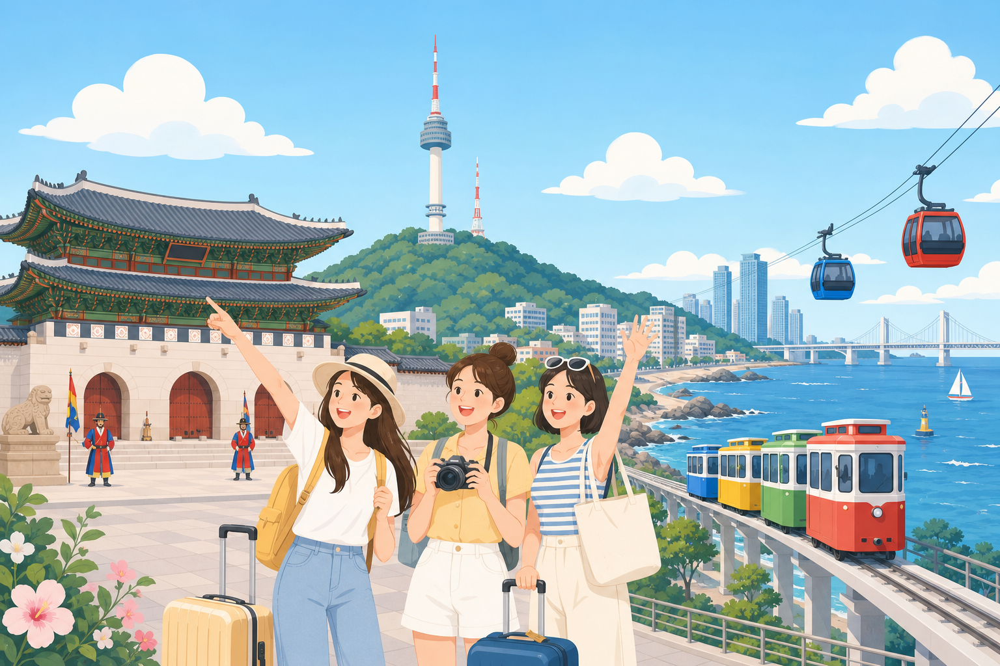
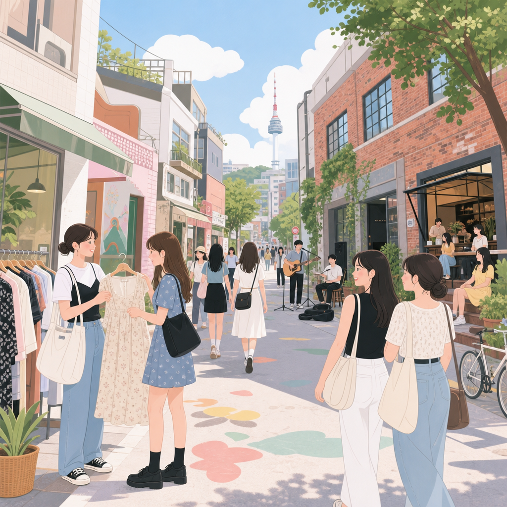
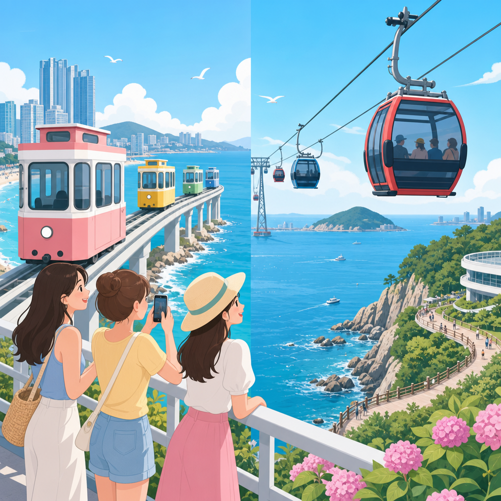
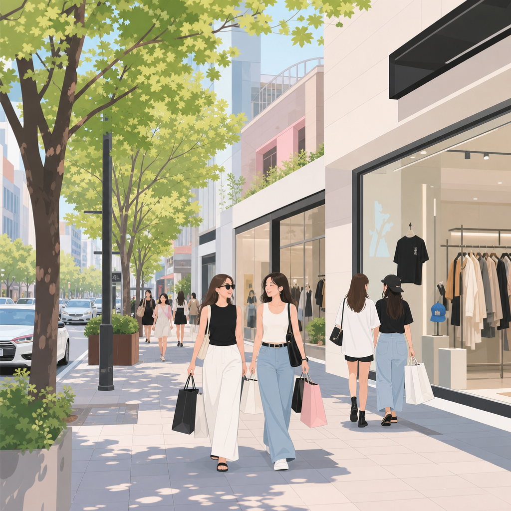
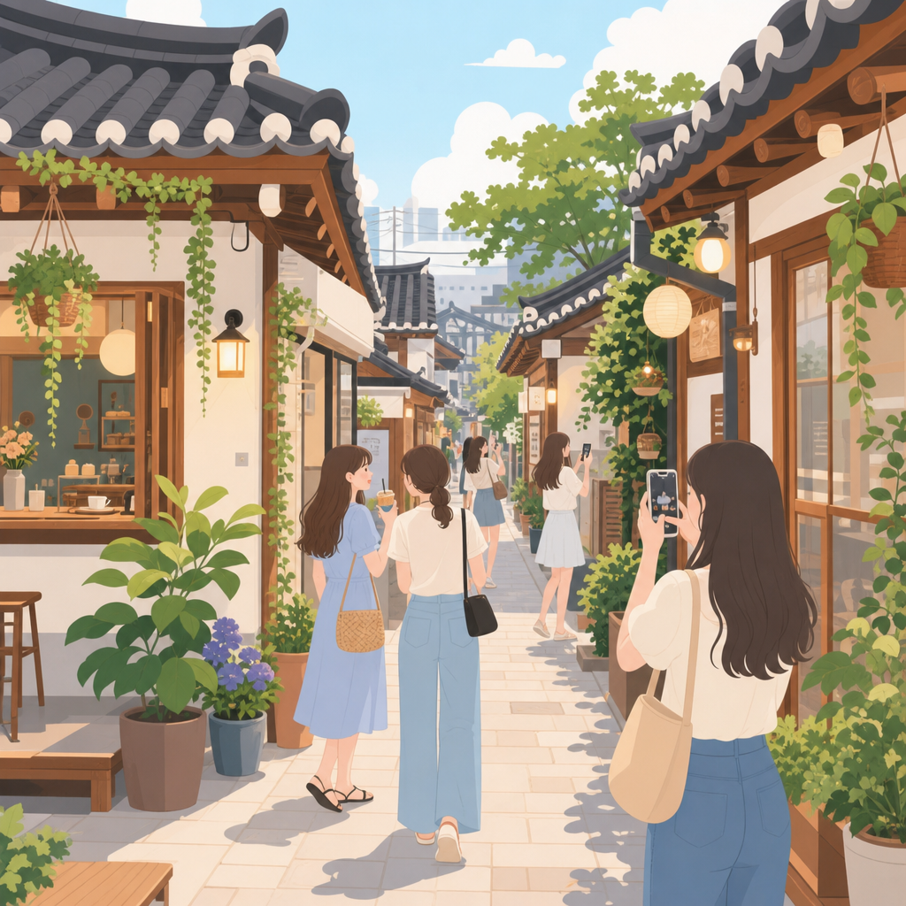
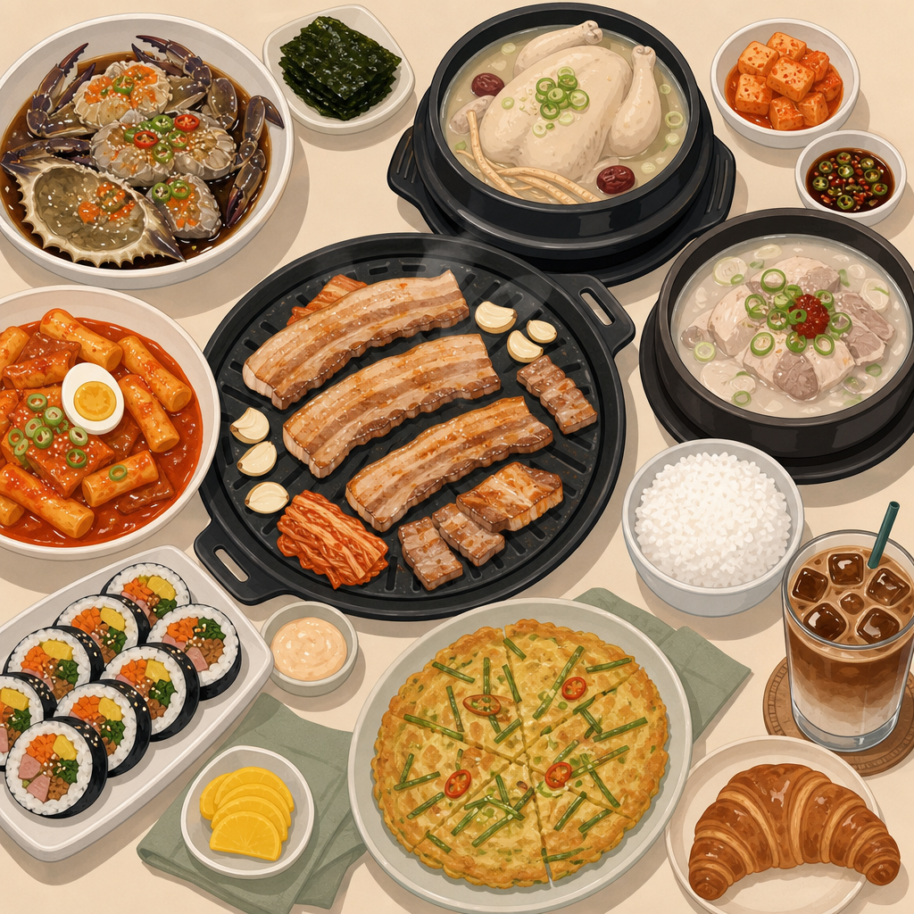

几个关键点已帮你算好/查好，避免踩坑。
日期已对应星期，一眼看清每天主线。
| 日期 | 星期 | 主要安排 | 住 |
|---|---|---|---|
| 6/30 | 周二 | 20:00 落地仁川 → 入住东大门 · 夜逛 DDP | 首尔·东大门 |
| 7/1 | 周三 | 景福宫韩服 + 北村 + 三清洞 + 明洞美妆 | 首尔·东大门 |
| 7/2 | 周四 | 弘大 + 延南洞 + 圣水洞（Matin Kim 旗舰）+ 东大门 | 首尔·东大门 |
| 7/3 | 周五 | 🚄 釜山一日特种兵：海云台天空胶囊 + 松岛缆车 + 南浦洞 | 首尔·东大门 |
| 7/4 | 周六 | 狎鸥亭（Stüssy）+ 新沙洞林荫道 + 汉南洞买手店咖啡 | 首尔·东大门 |
| 7/5 | 周日 | 益善洞 + 仁寺洞 + 广藏市场 + 自由补货 · 收行李 | 首尔·东大门 |
| 7/6 | 周一 | 上午 8:00 出发去机场 → 12:35 航班返程 | — |
过关 + 取行李大约到 21:00 出关。
3 人带行李，按舒适度排序见下方交通框。
状态好可去 DDP（东大门设计广场）拍夜景 + LED 玫瑰花海，附近商场逛到凌晨。
3 号线景福宫站 4 号出口附近多家韩服店（Hanboknam、Oneday Hanbok 等），约 ₩15,000–32,000，穿韩服进宫免门票。早上 9–12 点最忙，早点去。
🎺 守门将换岗仪式 10:00 / 14:00（周二不办），别错过。
土俗村参鸡汤等名店，详见美食榜。
韩屋 + 韩服绝配；三清洞文艺小店、咖啡馆。
注意还衣时间（多数 19:00 前）。
Olive Young 旗舰、各大护肤彩妆品牌；晚上小吃街超热闹。

Day 3 · 潮流年轻潮流、独立设计、vintage 古着、平价女装、街头品牌（Ader Error、Covernat）；步行街傍晚常有街头表演。
「京义线林荫道」散步 + 小众咖啡馆。午餐在此。
旧厂房改造红砖文创区，每周不同品牌快闪 pop-up、人气面包咖啡店、概念店。Matin Kim 圣水旗舰店（연무장3길 9，每天 11:00–20:00）就在这。
就在酒店旁：Doota Mall、Hello apM、Migliore 半夜也开；DDP 夜景。

Day 4 · 釜山车程约 2.5 小时（普通席 ₩59,800）。坐约 6:00 的车，约 8:30 到釜山站。务必提前订往返票。
尾浦（Mipo）↔ 青沙浦（Cheongsapo）私人小舱，3 人一舱 ₩45,000/舱（≈₩15,000/人），全程约 30 分钟海景。可再坐海岸列车（₩8,000 单程）逛青沙浦灯塔等站。
猪肉汤饭名店（见美食榜）+ 海云台沙滩 / 冬柏岛 The Bay 101。
1.62km 跨海缆车，松林公园 ↔ 岩南公园天空公园。往返：普通舱 ₩17,000 / 水晶舱（玻璃底）₩22,000。旺季 7–8 月 09:00–22:00。可玩松岛天空步道。
光复路购物街、札嘎其海鲜市场、BIFF 糖饼。时间够可顺甘川文化村（约 18:00 关）。
约 19:30–20:30 的车，回首尔站约 22:00–23:00，地铁回东大门。

Day 5 · 买手潮流地址 78 Apgujeong-ro 46-gil，江南区，每天 11:00–20:00。热门常排队，开门前到更稳；可顺逛附近 Matin Kim Dosan 店（언주로164길 14）。
设计师店 + 潮流小店 + 高级咖啡，午餐在此。
雅致咖啡馆 + 精品买手店（如 MSMR）；文艺小资氛围超好拍。
汉南/梨泰院一带美食选择多。

Day 6 · 文艺补货老韩屋改造的文艺咖啡馆、小店，拍照氛围一流。
仁寺洞买伴手礼/工艺品（Ssamziegil）；广藏市场吃绿豆煎饼、麻药紫菜包饭、生牛肉。
美妆回明洞 Olive Young；潮流回弘大/圣水；或东大门一站式（就在酒店旁，方便拎回房）。
保留小票和护照；分好托运/手提，液体注意手提限制。晚餐东大门一只鸡/烤肉收尾。
留足时间应对周一早高峰 + 值机 + 安检。
值机 → 托运 → 退税（机场柜台/自助机，预留时间）→ 安检 → 登机。
以下都是常年高人气、口碑稳定的店；热门店建议提前订位或错峰。

📍 地址都已查好，可直接复制到 Naver Map / KakaoMap 导航。连锁店随处可见，就近搜店名即可。
主营韩牛，温泉蛋+酱油蘸料，肉质好、冷面也赞。人均不到 100 元，老板会中文，常排队 1–2h，店员代烤。
📍 서울 마포구 양화로16길 15 1층 102호 · 弘大入口站 9 号出口 · 14:00–24:00店员全程代烤，铁板烤锅巴饭（带芝士）+ 熟成五花、白泡菜烤后包肉一绝。圣水也有直营店。
📍 서울 종로구 자하문로1길 13（景福宫店）· 景福宫站 · 另有성수역점圣水主街对面、满墙艺人签名。五花肉改花刀烤得均匀入味，大酱汤/泡菜汤都好喝，店员烤肉手艺佳。
📍 서울 성동구 왕십리로4길 23-1 · 纛岛(뚝섬)站 7 号出口 · 12:00–23:00（午休15-17，周末无）米其林必比登常客，YBD 黑猪「本五花」厚实多汁。下午 2–3 点先到排队，店员发肉到骨边。离东大门一站很近。
📍 서울 중구 다산로 149 · 药水站 2 号出口 224m · 11:30–23:00「爽吃肉」首选，牛肋骨有奶香、沙拉解腻，老板勤换铁盘、炭火却能保汁水嫩度，2 人轻松干掉 1kg，价格不贵。
📍 서울 마포구 신촌로16길 16 · 新村站 · 소갈비살/LA갈비20 年老店，烤牛肠有奶香、阿姨帮烤不用自己动手，선지국无限续。缺点是吃完身上有味。
📍 서울 마포구 동교로27길 20 · 弘大入口站 · 12:00–00:30新村곱창一线选手、价格适中，蜂巢肚(벌집양)有特色。大多初步烤好上桌，按人数点「全部/모듬」。마마무 화사打卡。
📍 서울 서대문구 연세로9길 31 · 新村站 2 号出口步行 4 分 · 14:00–02:00无限续肉、牛肉新鲜偏多。₩26,900 吃到饱，离성수一站(2 号线)，逛성수可顺路。周二休。
📍 서울 광진구 능동로 91 · 建大入口站 5 号出口步行 1 分「演唱会后集中营」，机器点餐方便、有会中文店员，汤饭适合奔波后暖胃，24 小时营业。
📍 서울 마포구 홍익로6길 74 · 弘大入口站 8 号出口 129m · 24h콩비지(豆渣)底，可选辣度+加一份泡面。웨이팅必备，建议 6 点前到。周日休、午休 14:30–17:00。
📍 서울 마포구 월드컵북로5길 17 · 弘大入口站 1 号出口步行 5 分 · 周一-六 11:00–22:00宽刀削面版炒码汤，海鲜/차돌칼짬뽕+迷你糖醋肉。常因售罄提前打烊、营业时间多变，去前用 Naver 确认当天。
📍 서울 마포구 포은로 117 · 望远 · 约 11:30–19:30（午休14-16）매운/크림(로제)소갈비찜两味，年糕+粉丝无限续，5 级辣度可选。粉丝排骨软烂入味让人想念。
📍 서울 서대문구 연세로5가길 19 1층 · 新村站 1 号出口육회덮밥(生牛肉盖饭)是招牌、소고기가지덮밥(牛肉茄子盖饭)也好，味道一绝、可一人食，自助小菜+菠萝。
📍 서울 서대문구 이화여대7길 24 · 梨大/新村面条劲道、爱豆常去，机器点餐可一人食、有会中文店员。弘大代表店：후타츠(상수)、칸다소바(홍대)，吃法 1/3 原味后加昆布醋+辣油。
📍 후타츠 상수점 / 칸다소바 홍대점 · 弘大-上水一带韩屋感한식주점，多곱도리탕(辣炖鸡)鸡用纯肉无骨+大肠+年糕，可自捏饭团蘸汤，人均约 100 元、传统酒丰富。
📍 서울 성동구 왕십리로10길 5-1 1층 · 纛岛站 7 号出口步行 1 分 · 17:00–01:00玉米土豆丸子、芝士薯泥瀑布牛排（现场淋芝士）、金黄酥脆炸茄子、奶油意面。粉色门面超好拍。
📍 서울 성동구 상원6길 5-1 1층 · 圣水 · 午休 14:30–16:30광장시장「生牛肉一条街」米其林级名店：生拌牛肉(加梨子)香甜、活章鱼新鲜、탕탕이绝。月-六营业、人气高需排队。
📍 서울 종로구 종로 200-12 · 광장市场육회골목 · 钟路5街站 · 周一-六 09:00–22:00烤五花肉 + 大酱汤吃到饱，约 ₩17,900/人，30 年连锁老店，人气高。
东大门一只鸡代表，汤鲜，就在你们住宿区，宵夜/晚餐都合适。
📍 서울 종로구 종로40가길 18 · 东大门站附近首尔最有名参鸡汤之一，常排队。配韩服日午餐绝配。
📍 서울 종로구 자하문로5길 5 · 景福宫站 2 号出口招牌刀削面 + 馄饨，连续多年米其林必比登推荐，翻台快。
酱油蟹「拌饭神器」，明洞人气酱蟹店。
绿豆煎饼、麻药紫菜包饭、生牛肉(부촌육회)、辣炒年糕，体验在地烟火气。
圣水 Onion 面包咖啡店超人气；伦敦贝果博物馆排队名店，早点去。
aespa 代言的披萨，트러플버섯/콘쉬림프人气、可点半半口味。多家分店，旗舰在서울숲(圣水)。
📍 서울숲店：서울 성동구 서울숲2길 26 1F · 圣水/首尔林 · 其他분점 Naver 搜原味 + 辣味猪蹄都推荐，连锁。江南/狎鸥亭那天可顺吃。
📍 강남点：서울 강남구 논현로95길 29-5 · 江南/논현海云台 24h 名店，就在海云台站旁，猪骨汤清爽暖胃，约 ₩10,000。
提供釜山式 + 密阳式双汤底，招牌猪颈肉冷面套餐，离海云台站 5 分钟。
新鲜生鱼片、海鲜，BIFF 广场籽糖饼（씨앗호떡）是釜山名物。
旺季周末票紧张，打勾的项目出发前先订好。价格为参考（每人/韩元）。
首尔站↔釜山站，约 2.5h。Korail 官网 / Klook。
3 人一舱，超热门务必提前订最早时段。
往返；Klook 比现场便宜。
穿韩服进宫免门票，现场或网上订。